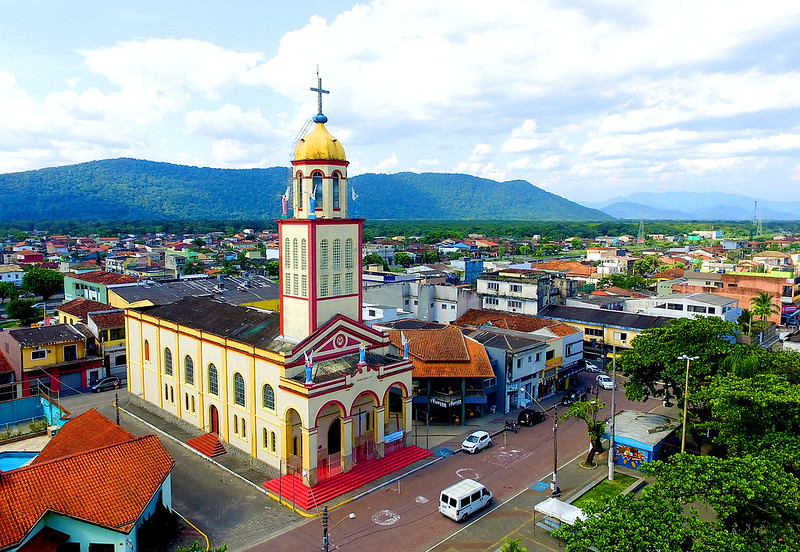

Itanhaém
A cidade de Itanhaém é uma das mais antigas do Brasil, oferecendo uma experiência única ao unir história, natureza e tranquilidade no litoral sul paulista.
Conhecida por seu patrimônio histórico, a cidade abriga construções como o Convento Nossa Senhora da Conceição, que proporciona uma vista panorâmica da região.
Além disso, Itanhaém possui praias mais tranquilas e áreas de Mata Atlântica preservada, favorecendo atividades ao ar livre e o contato com a natureza.
Outro destaque são seus rios e morros, que complementam a paisagem natural e tornam a cidade ainda mais atrativa.
Assim, com clima calmo e estrutura adequada ao essencial, Itanhaém pode ser o lugar ideal para quem busca sossego sem abrir mão do litoral.
